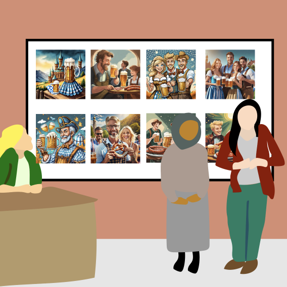

Erika and Doreen (12 years old) talk about their experience at the spring fair (Frühlingsfest) close to Leipzig, and they collect AI-generated images for a presentation.
Homage to a Local Artist
The AI-generated images mostly show typical Bavarian traditions and do not reflect Erika and Doreen’s experiences in Leipzig.


The students begin their presentation by saying: “At the festival in Leipzig, people wore different costumes, but you get an idea.”
During the project week on ‘Emerging Technologies Around Me’, I offered a workshop on AI-generative arts for 4th graders to turn their own drawings into stunning professional-looking images. I asked students to upload a drawing to an AI-generative arts app. One student brought a drawing of her brother smiling in the sunshine. The AI-generative arts app translated the student’s drawing into a manga-style drawing of a boy. His smile turned into a neutral expression, and his short dark hair had changed into longer blonde hair. The student showed the images to the class and explained: “I like my drawing better because it shows my brother. The AI image looks good but not like my brother at all. I would never draw him like this.
Support Materials
View Appendix.

Conversation Prompts
Based on OECD AI principles.
Inclusive growth, sustainable development, and well-being
- Does AI-generative art improve student presentations and, if so, how?
Human-centered values and fairness
- What biases can you identify from the AI-generated image of Bavarian traditions?
Transparency and explainability
- Are all the people you usually interact with portrayed through the pictures the AI tool generates?
Additional Information
AI-generative arts apps can create compelling visualizations. This can support students to create unique images to visualize their presentations. However, AI-generative arts apps can lack the complexity of reality because of the data used for training the applications (Crawford & Paglen, 2021). One example is the absence of cultural diversity in the underlying AI model. Hence, AI-generated images might reflect common stereotypes and biases related to gender, race, ethnicity, cultural artifacts, and more (Srinivasan & Uchino, 2021).
Reference
Crawford, K., & Paglen, T. (2021a). Excavating AI: the politics of images in machine learning training sets. AI & Society. https://doi.org/10.1007/s00146-021-01162-8
Srinivasan, R., & Uchino, K. (2021). Biases in generative art: A causal look from the lens of art history. In Proceedings of the 2021 ACM Conference on Fairness, Accountability, and Transparency (pp. 41–51). ACM. https://doi.org/10.1145/3442188.3445869
Explorer other scenarios

MAGAZINE CUT-OUTS

Draw a picture. Scan and copy it. Change the scan with AI. Change the copy with magazine cut-outs. Repeat several times.
DRAWING PLUS TEXTURES

Draw a picture and lay a tangible texture. Merge both using AI. Create another texture. Merge it with your AI-generated art.
EXPANDED FRAMES

Replicate a local artist’s drawing through several rounds of text-to-image AI prompting. Print the designs and prompts.
AI SUPER HERO

Develop an AI super hero and create stories by using image-generative AI and art materials. Print it in a comic book style.
PROTOTYPING AND PITCHING AI

Design an AI product to aid their school reach Sustainable Development Goals, and use AI to create a pitch and illustrate it’s use case.
THE TIME CAPSULE

Use image-generative AI and materials to craft a message explaining AI and its ethical considerations to a future civilization.
TRAIN AI WITH CAREER CHARACTERS

Create different career characters with art materials and train personal reorganization AI with Google Teachable Machine.
CRAFT PLAYDOUGH STORYBOARDS

Craft and iterate physical settings and storyboard of an adventure story with image-generative AI and playdough.